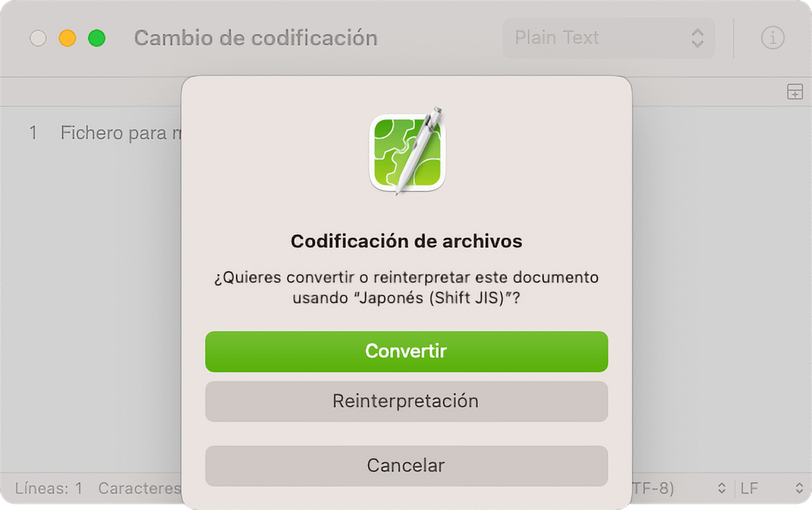

Los caracteres pueden confundirse si CotEditor no detecta correctamente la codificación de texto del archivo. En tales casos, cambie la codificación del texto como se describe a continuación:

El comportamiento de cada botón en este cuadro de diálogo es el siguiente:
encoding=” o “@charset,” tendrán prioridad cuando CotEditor detecte la codificación del texto.